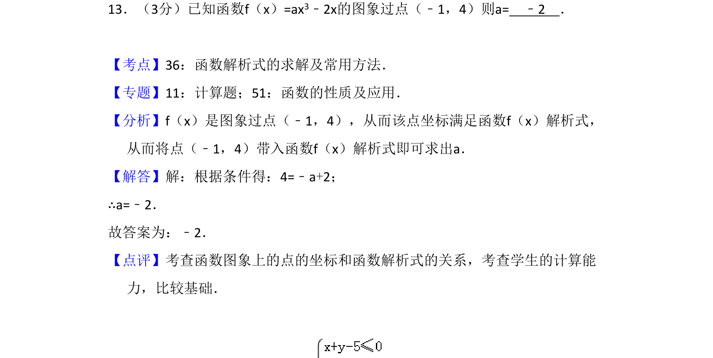
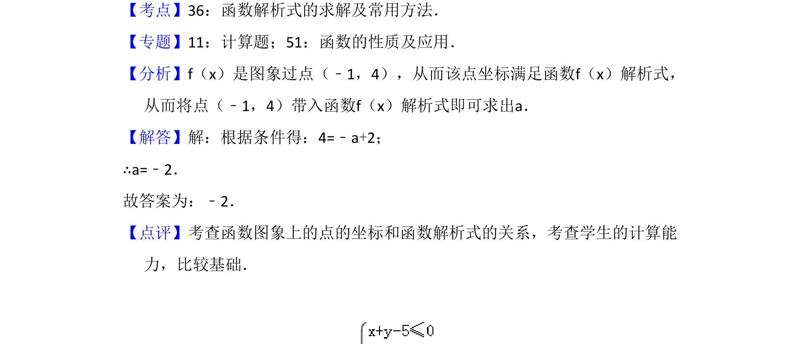

考点：函数解析式 点与函数图象的关系 代数运算

已知函数图象过点求参数值，利用点坐标满足函数解析式建立方程求解。

📄 原 PDF 第 10 页：
素材/真题/吉林/2008-2024·（吉林）数学高考真题/2015年高考数学试卷（文）（新课标Ⅱ）（解析卷）.pdf
13．（3分）已知函数f（x）=ax3﹣2x的图象过点（﹣1，4）则a= ﹣2 ．
【考点】36：函数解析式的求解及常用方法．菁优网版权所有 【专题】11：计算题；51：函数的性质及应用． 【分析】f（x）是图象过点（﹣1，4），从而该点坐标满足函数f（x）解析式， 从而将点（﹣1，4）带入函数f（x）解析式即可求出a． 【解答】解：根据条件得：4=﹣a+2； ∴a=﹣2． 故答案为：﹣2． 【点评】考查函数图象上的点的坐标和函数解析式的关系，考查学生的计算能 力，比较基础．